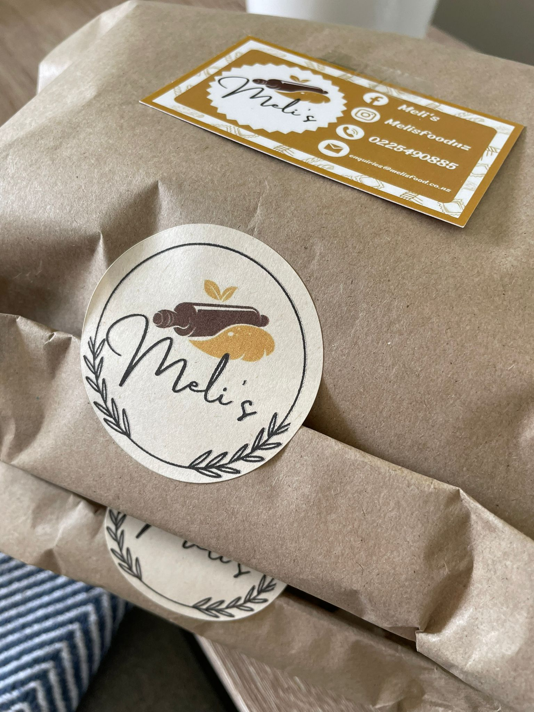

Melis History
We have a story deeply rooted in passion and flavor. It all began with a love for authentic Italian cuisine and a dream to bring the taste of Italy with a latin american twist to every plate.
Our pizzas start with a foundation of handcrafted dough, made with care and allowed to rise to perfection. We believe that great pizza is all about the balance of flavors, so we source the freshest produce, the finest cheeses, and the most flavorful herbs and spices to create unforgettable combinations that will tantalize your taste buds.
Our pasta dishes are a labor of love. We take pride in making our pasta from scratch, using traditional methods passed down through generations. Each bite showcases the harmony of al dente pasta, luscious sauces, and carefully selected ingredients that create a symphony of flavors on your palate.
As our journey continues, we remain committed to innovation while staying true to our roots. We constantly explore new flavors, experiment with unique toppings, and embrace the evolving tastes of our discerning guests.

Melis Team
Behind the scenes of our pizza and pasta haven, there's a small, dedicated team working tirelessly to bring you the most delightful dining experience. We may be small in numbers, but we're big on passion, creativity, and a shared love for authentic Italian cuisine.
We are the heart and soul of our kitchen. With years of culinary expertise and a deep understanding of Italian flavors, they meticulously craft each pizza and pasta dish with precision and care. From kneading the dough to simmering rich sauces, they pour their expertise into every plate, ensuring that each bite is a burst of mouthwatering delight.
We believe that our small team allows us to focus on quality, attention to detail, and personalized service. We take pride in our ability to connect with our guests on a deeper level, remembering your favorite dish, accommodating special requests, and creating an environment that feels like home.